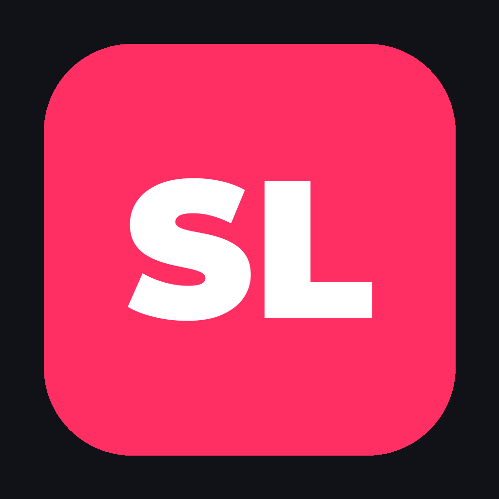

Share Labs is a private desktop tool used by a small team to edit their own short videos and publish them, after human approval, to their own YouTube, Instagram and TikTok accounts through the official APIs.
It runs only on the team's own computers. There is no public sign-up and no other users.
Contact: koste.games1@gmail.com